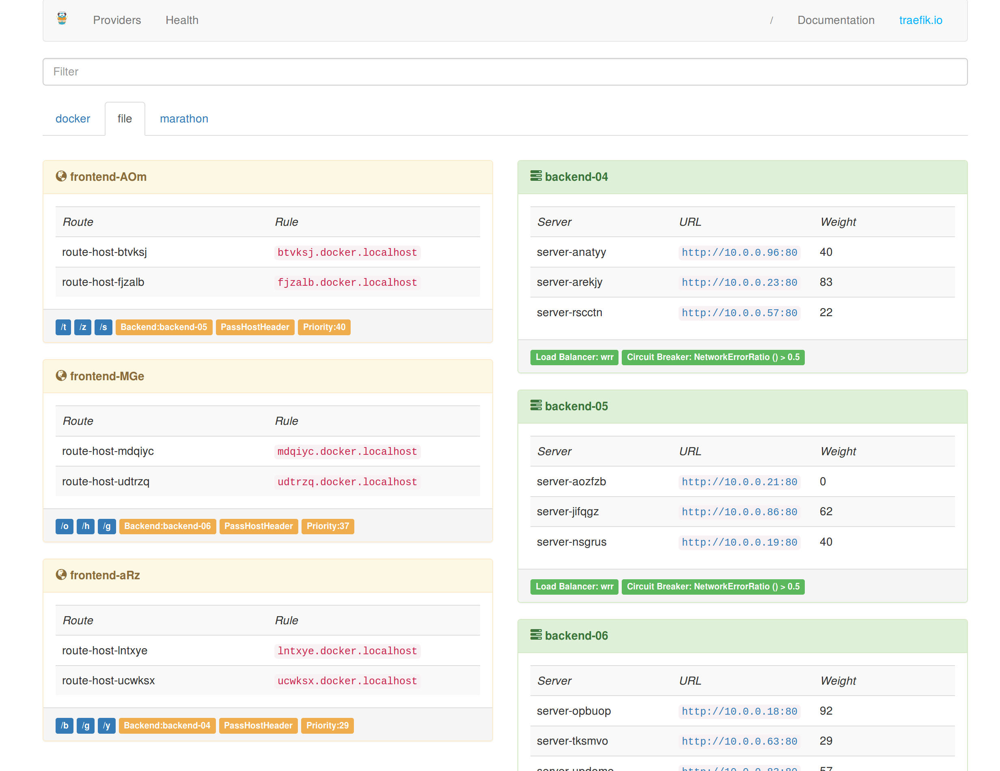
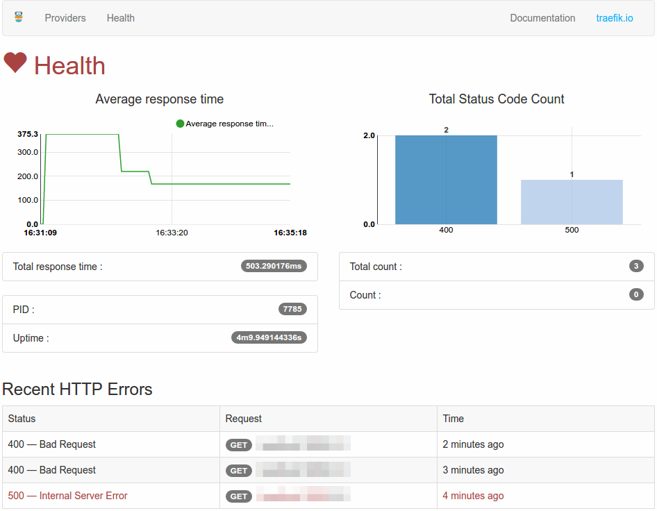

Web Backend¶
Træfik can be configured:
- using a RESTful api.
- to use a monitoring system (like Prometheus, DataDog or StatD, ...).
- to expose a Web Dashboard.
Configuration¶
# Enable web backend.
[web]
# Web administration port.
#
# Required
# Default: ":8080"
#
address = ":8080"
# SSL certificate and key used.
#
# Optional
#
# certFile = "traefik.crt"
# keyFile = "traefik.key"
# Set REST API to read-only mode.
#
# Optional
# Default: false
#
readOnly = true
Web UI¶


Authentication¶
Note
The /ping path of the api is excluded from authentication (since 1.4).
Basic Authentication¶
Passwords can be encoded in MD5, SHA1 and BCrypt: you can use htpasswd to generate those ones.
Users can be specified directly in the toml file, or indirectly by referencing an external file; if both are provided, the two are merged, with external file contents having precedence.
[web]
# ...
# To enable basic auth on the webui with 2 user/pass: test:test and test2:test2
[web.auth.basic]
users = ["test:$apr1$H6uskkkW$IgXLP6ewTrSuBkTrqE8wj/", "test2:$apr1$d9hr9HBB$4HxwgUir3HP4EsggP/QNo0"]
usersFile = "/path/to/.htpasswd"
# ...
Digest Authentication¶
You can use htdigest to generate those ones.
Users can be specified directly in the toml file, or indirectly by referencing an external file; if both are provided, the two are merged, with external file contents having precedence
[web]
# ...
# To enable digest auth on the webui with 2 user/realm/pass: test:traefik:test and test2:traefik:test2
[web.auth.digest]
users = ["test:traefik:a2688e031edb4be6a3797f3882655c05 ", "test2:traefik:518845800f9e2bfb1f1f740ec24f074e"]
usersFile = "/path/to/.htdigest"
# ...
Metrics¶
You can enable Traefik to export internal metrics to different monitoring systems.
Prometheus¶
[web]
# ...
# To enable Traefik to export internal metrics to Prometheus
[web.metrics.prometheus]
# Buckets for latency metrics
#
# Optional
# Default: [0.1, 0.3, 1.2, 5]
buckets=[0.1,0.3,1.2,5.0]
# ...
DataDog¶
[web]
# ...
# DataDog metrics exporter type
[web.metrics.datadog]
# DataDog's address.
#
# Required
# Default: "localhost:8125"
#
address = "localhost:8125"
# DataDog push interval
#
# Optional
# Default: "10s"
#
pushinterval = "10s"
# ...
StatsD¶
[web]
# ...
# StatsD metrics exporter type
[web.metrics.statsd]
# StatD's address.
#
# Required
# Default: "localhost:8125"
#
address = "localhost:8125"
# StatD push interval
#
# Optional
# Default: "10s"
#
pushinterval = "10s"
# ...
Statistics¶
[web]
# ...
# Enable more detailed statistics.
[web.statistics]
# Number of recent errors logged.
#
# Default: 10
#
recentErrors = 10
# ...
API¶
| Path | Method | Description |
|---|---|---|
/ |
GET |
Provides a simple HTML frontend of Træfik |
/ping |
GET, HEAD |
A simple endpoint to check for Træfik process liveness. Return a code 200 with the content: OK |
/health |
GET |
json health metrics |
/api |
GET |
Configuration for all providers |
/api/providers |
GET |
Providers |
/api/providers/{provider} |
GET, PUT |
Get or update provider |
/api/providers/{provider}/backends |
GET |
List backends |
/api/providers/{provider}/backends/{backend} |
GET |
Get backend |
/api/providers/{provider}/backends/{backend}/servers |
GET |
List servers in backend |
/api/providers/{provider}/backends/{backend}/servers/{server} |
GET |
Get a server in a backend |
/api/providers/{provider}/frontends |
GET |
List frontends |
/api/providers/{provider}/frontends/{frontend} |
GET |
Get a frontend |
/api/providers/{provider}/frontends/{frontend}/routes |
GET |
List routes in a frontend |
/api/providers/{provider}/frontends/{frontend}/routes/{route} |
GET |
Get a route in a frontend |
/metrics |
GET |
Export internal metrics |
Example¶
Ping¶
curl -sv "http://localhost:8080/ping"
* Trying ::1...
* Connected to localhost (::1) port 8080 (#0)
> GET /ping HTTP/1.1
> Host: localhost:8080
> User-Agent: curl/7.43.0
> Accept: */*
>
< HTTP/1.1 200 OK
< Date: Thu, 25 Aug 2016 01:35:36 GMT
< Content-Length: 2
< Content-Type: text/plain; charset=utf-8
<
* Connection #0 to host localhost left intact
OK
Health¶
curl -s "http://localhost:8080/health" | jq .
{
// Træfik PID
"pid": 2458,
// Træfik server uptime (formated time)
"uptime": "39m6.885931127s",
// Træfik server uptime in seconds
"uptime_sec": 2346.885931127,
// current server date
"time": "2015-10-07 18:32:24.362238909 +0200 CEST",
// current server date in seconds
"unixtime": 1444235544,
// count HTTP response status code in realtime
"status_code_count": {
"502": 1
},
// count HTTP response status code since Træfik started
"total_status_code_count": {
"200": 7,
"404": 21,
"502": 13
},
// count HTTP response
"count": 1,
// count HTTP response
"total_count": 41,
// sum of all response time (formated time)
"total_response_time": "35.456865605s",
// sum of all response time in seconds
"total_response_time_sec": 35.456865605,
// average response time (formated time)
"average_response_time": "864.8016ms",
// average response time in seconds
"average_response_time_sec": 0.8648016000000001,
// request statistics [requires --web.statistics to be set]
// ten most recent requests with 4xx and 5xx status codes
"recent_errors": [
{
// status code
"status_code": 500,
// description of status code
"status": "Internal Server Error",
// request HTTP method
"method": "GET",
// request hostname
"host": "localhost",
// request path
"path": "/path",
// RFC 3339 formatted date/time
"time": "2016-10-21T16:59:15.418495872-07:00"
}
]
}
Provider configurations¶
curl -s "http://localhost:8080/api" | jq .
{
"file": {
"frontends": {
"frontend2": {
"routes": {
"test_2": {
"rule": "Path:/test"
}
},
"backend": "backend1"
},
"frontend1": {
"routes": {
"test_1": {
"rule": "Host:test.localhost"
}
},
"backend": "backend2"
}
},
"backends": {
"backend2": {
"loadBalancer": {
"method": "drr"
},
"servers": {
"server2": {
"weight": 2,
"URL": "http://172.17.0.5:80"
},
"server1": {
"weight": 1,
"url": "http://172.17.0.4:80"
}
}
},
"backend1": {
"loadBalancer": {
"method": "wrr"
},
"circuitBreaker": {
"expression": "NetworkErrorRatio() > 0.5"
},
"servers": {
"server2": {
"weight": 1,
"url": "http://172.17.0.3:80"
},
"server1": {
"weight": 10,
"url": "http://172.17.0.2:80"
}
}
}
}
}
}